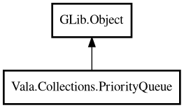

PriorityQueue
Object Hierarchy:

Description:
public class PriorityQueue<T> : Object
A priority queue backed by a binary min-heap.
Elements are ordered according to a comparison function provided at construction time. The element with the smallest value (as determined
by the comparator) is always at the head.
Inspired by Java's PriorityQueue and Go's container/heap.
Example:
var pq = new PriorityQueue<string> ((a, b) => {
return strcmp (a, b);
});
pq.add ("banana");
pq.add ("apple");
pq.add ("cherry");
assert (pq.peek () == "apple");
assert (pq.poll () == "apple");
assert (pq.poll () == "banana");
Content:
Creation methods:
Methods:
- public void add (owned T element)
Adds an element to the priority queue.
- public void clear ()
Removes all elements from the queue.
- public bool contains (T element)
Returns whether the queue contains the specified element.
- public bool isEmpty ()
Returns whether the queue is empty.
- public T peek ()
Returns the highest-priority (smallest) element without removing it.
Returns null if the queue is empty.
- public T poll ()
Removes and returns the highest-priority (smallest) element. Returns
null if the queue is empty.
- public bool remove (T element)
Removes the first occurrence of the specified element. Returns true if
the element was found and removed.
- public uint size ()
Returns the number of elements in the queue.
- public T[] toArray ()
Returns the elements as a native array. The order is not guaranteed to
be sorted.
Inherited Members:
All known members inherited from class GLib.Object
- @get
- @new
- @ref
- @set
- add_toggle_ref
- add_weak_pointer
- bind_property
- connect
- constructed
- disconnect
- dispose
- dup_data
- dup_qdata
- force_floating
- freeze_notify
- get_class
- get_data
- get_property
- get_qdata
- get_type
- getv
- interface_find_property
- interface_install_property
- interface_list_properties
- is_floating
- new_valist
- new_with_properties
- newv
- notify
- notify_property
- ref_count
- ref_sink
- remove_toggle_ref
- remove_weak_pointer
- replace_data
- replace_qdata
- set_data
- set_data_full
- set_property
- set_qdata
- set_qdata_full
- set_valist
- setv
- steal_data
- steal_qdata
- thaw_notify
- unref
- watch_closure
- weak_ref
- weak_unref